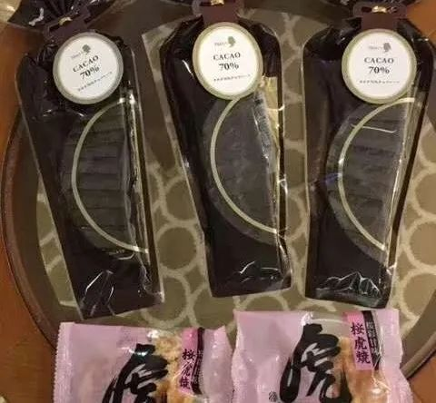
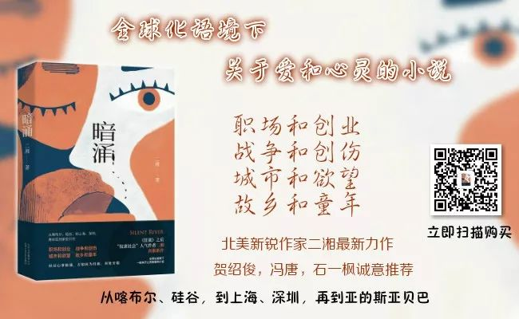

“钻石公主”历险记：邮轮隔离真的到位吗？
原文链接 备份链接 图片来源：WikiCommons 记者：田思奇 “ “当我们回顾过去时，很容易对当时某一时刻的公共卫生决策做出评判。当时的决定，显然比让所有人分散在世界各地要好得多。研究这一特殊事件，看看过程中出了什么问题，这非常重 …
_都说钻石公主号上的乘客的经历是“噩梦般的体验”，然而， 困在钻石公主号里漂流多日的Lucy，感受到的却是平安。同样的境地，我们可以怨天尤人，也可心怀感激。感谢梅玫通过好几位朋友联络上Lucy，授权首发她的文。_
1
钻石游轮上的情人节
最近很多新闻报导把我们所在的船称为“瘟疫邮轮“，甚至称为“漂流中的鬼魂船“，似乎每个在船上的人整天生活在恐惧中。其实大多数乘客并没有这样的感觉。每天早上船上的电视早安节目，主持人把前一天船长收到的乘客短信念给大家听，每封短信都属有房间号码，绝大多数是感谢信。确实，我们要感谢的人太多了。每天给我们准备可口饭菜的厨师，给我们送水送饭的歺厅服务员，给我们送换洗的浴巾床单，收集垃圾的客房服务员，还有很多保持邮轮正常操作的船员们。他们冒着有可能在工作时被感染的危险，尽力给我们提供服务。新闻报导没有关注这些默默无闻的奉献者，而大张旗鼓地报导少数整天报怨不能得到满足的人。
昨天是情人节，从下午四五点钟起，一个接一个的意外给乘客们带来了惊喜。首先是日本卫生厅发给每个房间一个苹果手机，手机上专设了一个APP, 可以随时与日本卫生厅下属的特别部门联系，这个部门下设了几个网点，专门服务船上的乘客与船员，比如需要补充个人用药，需要与心理医生谈话，需要与医生交流，以及对新冠状病毒的了解等等。这是日本卫生厅救灾的一个措施，已经在上次地震救灾中使用，并且得到很好的效果。我们很感激日本政府对船上病毒感染的高度重视，并在邮轮入港的第一时间就采取严谨的措施。这也是为什么我先生Gary没有受感染的重要原因, 虽然他属于易感人群。

又有人在敲门了，这次服务员给了一堆日本小礼物。这是日本民间给我们的情人节礼物，有日式糖果，心形巧克力，面部清洁和化妆用品（留着给儿媳），有维卫素C综合保健片，有日式红豆糕，那是我吃的，把Gary的那份也吃了😑。礼物虽小情意深。船上电视专题播放了日本小学生和民间团体对隔离中的我们关心与支持的视频，非常感动。
怎么还有人在敲门？这回是服务员送来的公主号总部给我们的西方情人节传统礼物，红玫瑰和巧克力。我们晚歺的小桌上有了一枝红玫瑰。在”瘟疫邮轮“上的情人节一样浪漫，一样喜乐。
感谢上帝，让我们在这个特殊的情人节又一次经历了他的关爱。
2
从钻石公主号撤离
上周六晚上收到大使馆的紧急通知，要我们做好准备，明天晚上下船回国。当时很多人不明白为什么在隔离期只剩三天就要结束的时候撤离，而且回国后还要重新隔离。我也不明白，但如果这是上帝的安排，那一定有我们不知道的原因，做好准备吧。果然，午夜之前，我们这一批273人的检查结果公布了，67人呈阳性，其中差不多有一半的人没有症状。我们的测试样品是在隔离八天以后才收集的。这些人很有可能是在隔离期间被感染的。美国政府一定是在得到日本方面通知后，马上作出撤离美国公民的决定。还要重新隔离14天不是我们所希望的，特别是知道我们并没有被感染。但撤离的三百多人中有不少人还没有做核酸检测，所以再次隔离是确保病毒不能从可能已被感染的人身上扩散到美国本土。上帝啊，请你告诉我，你要我在这十四天中做些什么呢？
十六号晚上十点撤离开始了，全程由美国CDC 救援队安排，日本自卫军协助。十四辆大巴等着接我们。由于某人的疏忽，三百多人的护照在收集后做出境盖章过程中混乱了。而登机前必须每人手持护照。为了把护照分发到坐在十四辆大巴上不能下车的我们，救援人员花了近三小时才把护照正确地送到每个人手中。这期间，在我们车上的一个救援工作人员给我们讲了他们这次来日本的经过。一天前在亚特兰大CDC总部工做的他们，突然收到加入救援队的通知，上飞机前只有几小时的准备，经过十几小时越海飞行到了日本横滨。没有休息，直奔停泊在港口的邮轮。不仅上船探访每个美国公民，又冒雨在邮轮出口处设立临时工作处，然后开始了撤离程序。如果我们对等待三小时的护照发送不满，那么他们更可以抱怨二十四小时没有休息，还要冒着可能被感染的危险。我们抱怨时间久了车上太热，穿着全套防疫服的他们不是更热吗？同样的境地，我们可以怨天尤人，也可心怀感激。
终于登上了专机。这不是一般的客机，是一架波音747改装的货运飞机。机上的座位颜色不同，式样不同，排座也与客机不同。一看就是临时装上的。没有窗口，仓顶很高。救援人员告诉我们起飞后可能会冷，因为没有一般客机的保暖系统。日本红十字会早有准备，捐献了很多毯子。这可不是客机上那种又小又薄的毯子，而是高质量的羊毛毯，用完了可以带回家。机上有很多食物饮料。因为没有服务员，自取所需。可是仓内有些地面高低不平，尤其在存放食物的地方，地面金属板没有接合平整。机上老人很多，如果不小心摔倒，后果难以预料。一位中年男乘客主动当上了服务员，忙前忙后地给走动不方便的老人送水送食物。CDC还派了随机医生，他耐心地回答大家的提问。其他救援人员则忙着给每个人注册，并定时测量体温。他们已有三十多小时没有休息了，难道他们会不累吗？
就在我们登机前，救援组接到日本卫生厅的通知，刚出来的检测结果显示在撤离的乘客中有十四名呈阳性。按照事先规定，所有阳性患者不得登机，必须留在日本治疗。那时这十四名乘客已经到了机场，多数人没有症状。如果通知他们返回横滨治疗，必会引起情绪大乱。在与CDC总部联系后，决定在仓内用大塑料布在后面搭了一个隔离仓，让他们坐在里面，带他们回国治疗。这是一个很人性化的决定。
上机前只知道两架飞机中一架飞往加州，另一架飞往德州。除了飞行员，谁都不知道我们这架飞机飞往哪里。当得知飞行时间约为12.5小时，我们猜想可能是飞往德州。果然，在还剩一小时的时候，机长通知大家，因为地面上的大雾，飞机无法在San Antonio 的空军基地降落，只能飞到达拉斯等大雾散去。那时是凌晨三点，大雾在天亮前是不会散去的。行程又要延迟了。
当飞机着陆时，大家都坐看不动，盼着大雾尽快散去。突然，一个救援人员说“这是空军基地，我们到了“，大家一下子兴奋起来。下机时一看，果然雾很浓。不要说飞机着陆，走路也看不了多远。什么水平的飞行员能在这种条件下平安着陆。我知道是谁在看顾我们。
地面上早有穿防疫服的CDC工作人员在等我们，还有一些军人在不远处向我们挥手致意。刚走进一个大厅，掌声响起了, 二三十个CDC工作人员在欢迎我们。听到 “Welcome home!”, 泪水止不住地往下流，到家了。Gary 对一个工作人员说”谢谢你，这么早起来接待我们”。她笑笑说”沒有起早，昨晚没上床”。我们这才意识到飞机晚点了，他们在基地等了一夜。他们为我们注册检测，安排宿舍，分发食物。看着他们亲切的笑脸和忙碌的身影，心里有说不出的感动。上车去宿舍了，这是我们这次旅行中坐过的最好最新的大巴，每辆车只坐十来个人，使我们不靠得太近，这也是一种预防措施。到了宿舍楼，行李箱已经在那里了。还有多少我没看到的人彻夜没睡在为我们服务？
有些人把这次从船上撤离和回国隔离形容成”逃出了瘟疫船，又进了监狱”。而我的经历是上帝让我看到了这么多人的奉献与爱心，让我看到了”不能着陆”变成“平安着陆”，能不感恩吗？
【作者简介】Lucy：University of Idaho 退休教授。

 点击阅读更多文章
点击阅读更多文章
_阅读二湘最新长篇《暗涌》，请关注“二湘的六维空间”，回复“暗涌” _。__感兴趣加入二湘读者群的朋友请加群助理二木的微信“_____linjianhua637353”！_
二湘六维空间作品目录
《暗涌》：第1到17章 第18到30章 第31章到38章 读后感 豆瓣短评
《狂流》： 朝圣的路创作谈原型诺澄书评木蓝书评学者书评广州日报
玉观音系列小说： 暗涌 狂流 摩羯座的爱情 绿色之恋 重返2046 一步之遥 白的粉 距离
书评：格非刘慈欣李翊云冯唐安妮宝贝苏炜刀尔登严勇诺澄飞鸟集 李录 严歌苓 洛丽塔 魏微 阿来
影评：爱乐之城神奇女侠 七月与安生长城 一个陌生女人的来信 无问西东 太阳照常升起 西虹市首富 流浪地球 1917
散文：北大的嘘声 猜火车纽约记秋天新东方聆听王菲韩寒代笔 夏天 真实生活 31楼 李健完美坚持 我的故乡 元宵节 失恋指南 朱令铊中毒 不是读书人 告别虎爸虎妈 学戏剧的胖子 奴隶社会 奥数之路 天长地久
他山之玉：刘瑜 冯唐宝树 北星 菊子 郝景芳 严锋 秋天 诺澄 邓安庆 舒飞濂

原文链接 备份链接 图片来源：WikiCommons 记者：田思奇 “ “当我们回顾过去时，很容易对当时某一时刻的公共卫生决策做出评判。当时的决定，显然比让所有人分散在世界各地要好得多。研究这一特殊事件，看看过程中出了什么问题，这非常重 …
原文链接 备份链接 图片来源：CNN “ 有报告指出，根据发病日期来看，在邮轮实施隔离措施后，乘客之间的传染有所减少。在隔离期后期，感染主要发生在船员之间以及客舱之内。 ” 继昨天443名检测呈阴性的乘客离开“钻石公主”号邮轮后，600多 …
原文链接 备份链接 钻石公主号邮轮在全球新冠疫情中是一个特殊又典型的样本：由于邮轮的封闭环境，它成为了传染集中暴发地，证明了全人类的普遍易感性；这又是一艘停靠在日本、船籍是英国、运营主体属于美国的邮轮， …
原文链接 备份链接 日本厚生劳动省于17日下午公布，在对504名乘客实施的检测中，又发现99人感染新冠肺炎，其中有70人没有症状。至此已经有1723名乘客接受检查，454人感染。虽然邮轮上所有乘客和船员已被整体隔离，但确诊人数仍不断攀 …
原文链接 备份链接 「钻石公主号」邮轮的离岸隔离进行到第九天，已经有174人确认感染新冠肺炎，超过了日本本土的确诊感染总数，且还在增加。一个突然来袭的新型病毒，一场突然降临的隔离，一艘无法靠岸的船。「钻石公主号」像个隐喻，它暴露了看似平滑 …